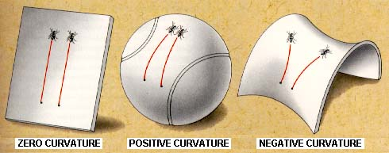
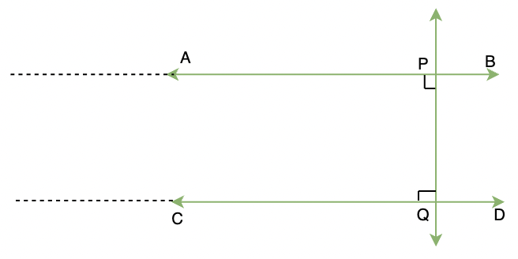

Welcome back! This week, we’ll be continuing where we left off and talking about my reading on one of the most crucial concepts in general relativity: geodesics.
Geodesics are in some way a generalization of the notion of “straight lines” in flat space; they’re the trajectories that free particles will travel through space. However, in curved space, they often won’t quite look “straight”: rather, they will move in a fashion determined by the metric tensor of that space.
The Shape of Space
Before we can introduce the metric tensor, we have to clarify what it even means for space to be “flat” or “curved” in the first place. When you think of curved space, there’s a good chance you’re thinking of something like this:

This is a very common representation: some sort of 2D sheet twisted in 3 dimensions. And in fact, the sheets shown above are in fact sheets with the aforementioned curvatures, but there’s a subtle nuance to be teased out here: a space does not (as implied by the image) require an extra dimension to “curve into.” That is, it is totally possible for a 2D sheet to be curved without a third dimension existing. The third dimension provides a useful visualization tool, but it is not a fundamental part of the definition of a curved space. What, then, is the definition of a curved space? To understand this, it will be worthwhile to take a detour a couple millennia into the past to talk about Euclid’s postulates.
When Euclid set forth his seminal text on mathematics, the Elements, he laid out a number of extremely sensible assumptions (postulates or axioms), and used these assumptions along with the basic logic of proofs to derive a great number of theorems that we still study in school today. The Elements is still widely held as one of the earliest rigorous treatises on mathematics and has had a large influence on how early mathematics was formalized, but even more impressively, holds up extremely well over 2 thousand years later; almost all of Euclid’s logic and assumptions have withstood the test of time.
Almost.
Now infamously known as Euclid’s Fifth Postule, or the Parallel Postulate, Euclid made the following claim (or technically, a claim equivalent to this) as one of his assumptions: if two lines are mutually perpendicular to a line, and are extended infinitely, they will never meet.

On first glance egregiously obvious, this postulate faced criticism over the years, with some mathematicians claiming that it was redundant and provable from the other postulates, although nobody was able to prove it. It was only two millennia later that Bernhard Riemann (remember the Riemann tensor from before?) finally proved Euclid right: the Parallel Postulate was not implied by Euclid’s other postulates. In fact, it was not even necessary. If you made a different assumption (i.e, parallel lines converge or diverge at a certain rate, or even do some weird oscillatory behavior), you got an equally consistent system of geometry that looked very different.
It turns out that Riemann’s calculations for parallel lines that approach each other describe the surface of a sphere (a “positively curved”) surface. If you look at the image of positive curvature above, you’ll see that in fact parallel lines approach each other. This gives us a solid definition of curvature: a positively curved space is a space in which parallel lines converge, and a negatively curved space that in which parallel lines diverge; no reference to an external dimension is required! Perhaps you’re already seeing the connection to gravity here. If not, consider the following thought experiment: two balls travel through space on parallel trajectories. What will happen to them over time? Well, gravity will slowly bring them to drift towards each other. This is exactly what we would expect of “straight lines” in a positively curved space!
A note about terminology: “straight lines” is a strange term to ascribe to curving trajectories; these kinds of “free,” unaccelerated paths are straight in a flat space, but not necessarily in a curved space, so henceforth we will be calling them geodesics.
The Metric Tensor
One more thing to straighten out: how exactly do we quantify this “shape of space”? We could define some scalar which is just the degree to which the space is curved ( for flat, for positively curved, for negatively curved), but we would quickly find this is highly inadequate. For example, what do we do about surfaces that have variable curvature? Local curvature will be very important to us when doing calculations with general relativity.
Once again, Riemann has this problem solved. One of the most significant contributions Riemann made to differential geometry (a field he basically founded) was to introduce a correspondence between the geometry of space and the notion of distance. In particular, what Riemann proved is that if you know the distance between any two points in a space (or equivalently, have some local definition of distance), you have all the information of that space. That is, a local notion of distance completely and uniquely defines a space in differetial geometry. So if we find the most general mathematical structure that can capture notions of distance, we have found the most general mathematical structure that can define the shape of space.
The notion of distance you’re probably familiar with comes from the Pythagorean Theorem:
A distance (in flat, Euclidean space) is the sum of the squares of differentials, in an coordinate system at least. Using coordinates of we would get a slightly messier distance
This equation which encodes the distance between two points is called the metric of a space. Note that both of the above equations are just the squares of differentials times some coefficients. Riemann showed that the most general metric depended only on these “second-order” differentials (i.e, the products of two differentials). Therefore, we could write the most general metric possible (and note, once again, the use of the Einstein convention for summation):
where is a set of coefficients that multiply these second-order differentials. This set of coefficients is all that is needed to specify the properties of a space, and as you may have deduced by now, is exactly the metric tensor. (The equation above isn’t quite enough to specify the behavior of the metric tensor, also necessary is to note that the metric tensor is symmetrical, so .)
A slight tangent: Note that I specified physical spaces above. The astute and/or pedantic topology enthusiast might at this point protest that the above equation does not cover all spaces, which is true: for instance, the famous Manhattan metric is not of this form. However, these kinds of spaces are highly non-physical and beyond the purview of general relativity.
We’re nearly done with the metric tensor, just one more nuance to mention: since we are dealing not with space but instead with spacetime, we will be working in coordinates of either or . When time is not included as a coordinate, it is convention in general relativity to use Latin letters to denote indices (as in ), while when time is included, it is convention to use Greek letters (as in ).
Next week, we’ll finally talk about the geodesic equation in full, and complete our background reading, so tune in again!
Sources
- Misner, Thorne, and Wheeler. Gravitation. Princeton University Press. 1973.
- Carroll, Sean. Spacetime and Geometry. Cambridge University Press. 2003.